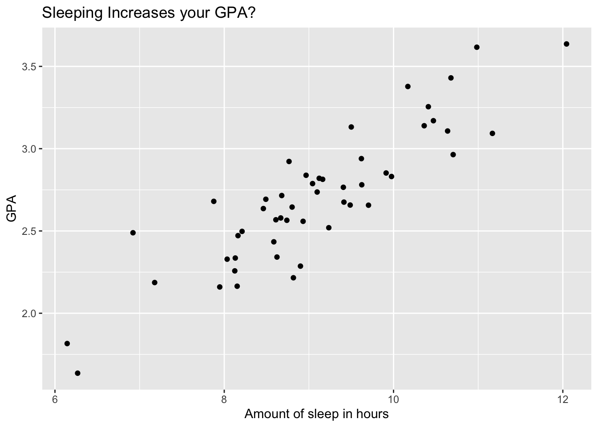
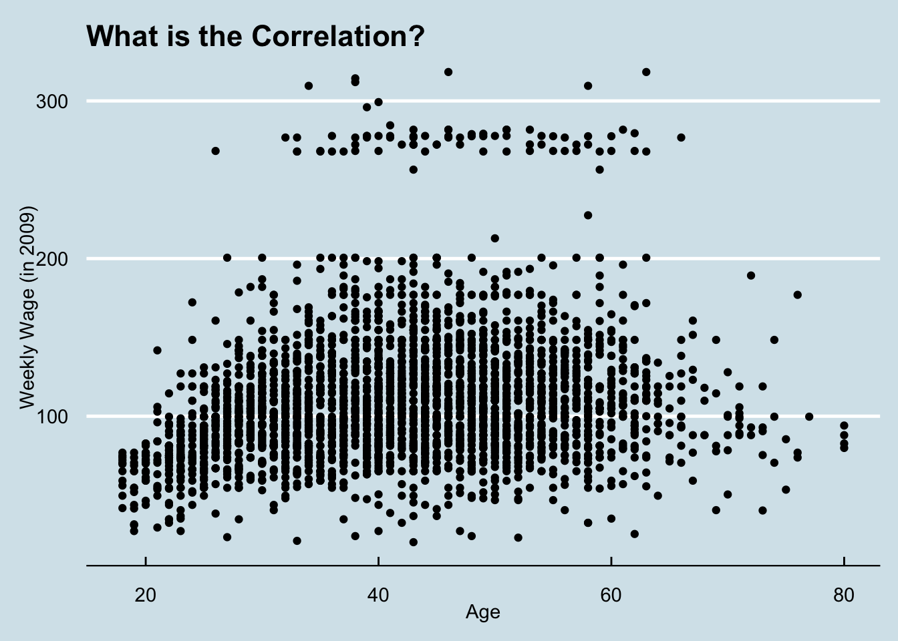

1 Correlation Coefficient
The word correlation is used widely in our daily conversations. It means many things depending on the context. In statistic, we have a definite meaning and a limitation to this word. It primarily depends on the datatype. For example, it is a reasonable question to ask that whether there is a correlation between a person’s skin color and their income. But it is hard to quantify this because race is a categorical variable and income is numerical. In statistics, when we talk about correlation, we generally mean the correlation between two numerical variables such as height and weight.
Example 1.1 Suppose you are interested in the correlation between amount of sleep and GPA.

## correlation
## 1 0.8835318
## correlation
## 1 0.1956372TWO variables The sample correlation coefficient is defined as:
\[ \frac{\sum_{i=1}^n (x_i - \bar x)(y_i - \bar y)}{SD_x SD_y} \]